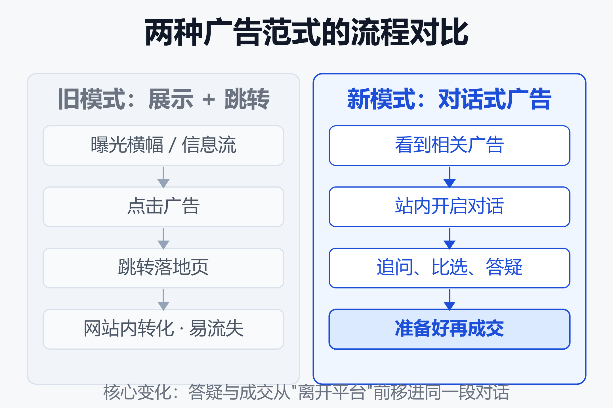
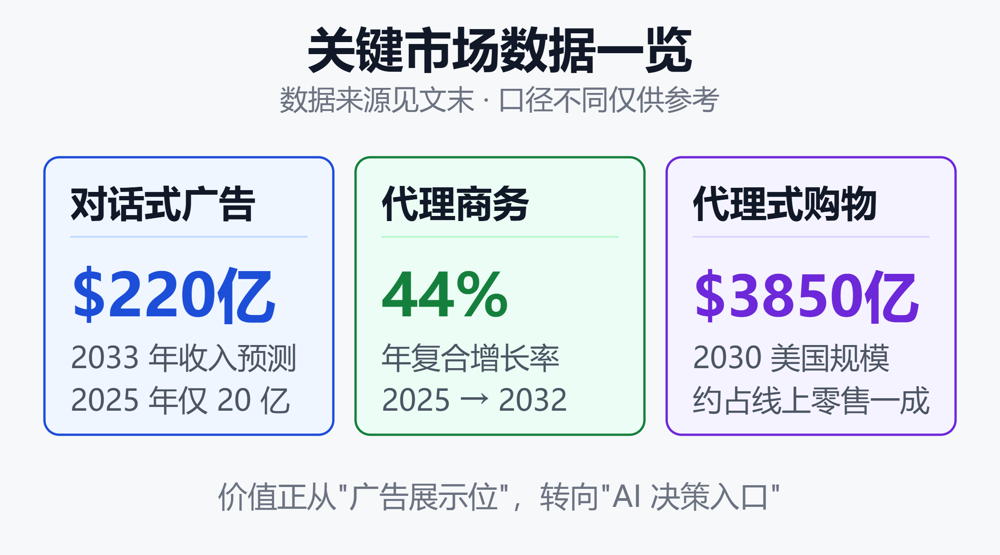

Agent 商业化新范式：广告不再是横幅，而是一次对话
2026 年 9 月 16 日，OpenAI 开始测试一种新的广告形式：Sponsored Agents（赞助智能体）。你点开一条广告后，不再被甩到一个陌生的落地页，而是在 ChatGPT 内部开启一段"和商家智能体的对话"。
同一时间，对话式广告的收入预测被摆上桌面：从 2025 年的约 20 亿美元，到 2033 年可能冲到 220 亿美元。广告这门生意，正在从"占用你的注意力"转向"参与你的决策"。
这不是又一个广告位的诞生，而是广告载体本身的更换。横幅、信息流、贴片这些"你看、它展示"的单向格式，第一次要让位给"你问、它答、它引导你成交"的双向对话。本文拆解这场范式转移到底变了什么、为什么是现在、钱在哪里，以及它要付出的信任代价。
一、从横幅到对话：范式到底变了什么
过去二十年的在线广告，本质是"展示 + 跳转"：平台把广告位卖给出价最高的人，你看到横幅或信息流卡片，点一下，跳到广告主的落地页，剩下的转化交给对方的网站。
对话式广告改写了这套流程的中段。用户在聊天里表达需求时，是用自然语言直接说清了"想要什么、在意什么、还想顺带了解什么"，这比点击轨迹里留下的碎片线索精确得多（AdTech Lab 研究）。广告不再挤在信息旁边，而是长进了对话本身。

如上图，旧模式是一条线性漏斗：曝光 → 点击 → 跳转 → 落地页转化，每一步都在流失用户。新模式则把"答疑、比选、引导"压缩进同一个对话窗口，用户点完广告后可以继续追问，直到准备好才跳走成交。核心变化有三点：
- 载体从"图文卡片"变成"可对话的智能体"，广告能实时回答追问。
- 交互从"单向展示"变成"双向问答"，用户的真实意图直接暴露给系统。
- 转化路径从"离开平台"变成"留在对话里"，成交闭环前移。
McKinsey 把这称为广告价值从"注意力"向"行动"的迁移：当 AI 改变了消费者发现和挑选商品的方式，广告的价值会流向那些能左右"被看到、被选中、被购买"的玩家。
二、OpenAI 的"赞助智能体"是怎么运作的
先厘清 OpenAI 在 2026 年的两步走。2 月，ChatGPT 上线"赞助推荐"，广告首次进入实时对话；9 月，进一步测试"赞助智能体"，把广告从"一条推荐"升级成"一段可持续的对话"。
官方给的例子很直白：一个在看餐桌的用户，点开广告后可以追问尺寸、能坐几个人、漆面怎么保养——由商家的智能体来回答，而不是 ChatGPT 本体（OpenAI 官方说明）。
几个设计细节值得注意：
- 明确标注：赞助智能体会被清楚标记为区别于 ChatGPT 自身回答的内容。
- 会话隔离：它运行在一个与用户原对话分开的独立会话里。
- 先聊后跳：用户可以先问清楚，准备好了再点链接去商家网站成交。
- 投放入口：广告主可以从 HubSpot、Shopify 等已有系统里配置和投放。
同期的动作印证了这不是孤例。亚马逊广告在 2026 年 9 月官宣与 OpenAI 合作，启动 ChatGPT 对话式广告试点，美国地区已有部分广告主进入封闭测试。BEN 和 Cataneo 则在 IBC2026 上展示了把电视和流媒体的插播广告变成可对话智能体的技术。对话式广告正在从文字聊天，向电商、视频等更多场景外溢。
三、为什么是现在：三条基础设施同时就位
范式转移不是喊出来的，是等基础设施凑齐了才发生的。2026 年，有三条线同时到位。
用户习惯：把 AI 当购物入口
生成式 AI 用于购物任务的采用率在 2025 年增长了 35%（AInvest 引述数据）。当越来越多的人习惯先问 AI"帮我挑一个"，AI 对话窗口就从"问答工具"变成了"消费决策入口"——这正是广告最想站的位置。
成交层：智能代理商务协议成型
光能聊不够，还得能付钱。2025 年 9 月，Stripe 与 OpenAI 联合发布 Agentic Commerce Protocol（ACP，Apache 2.0 开放标准），首先落地于 ChatGPT 的 Instant Checkout。它规定了 AI 智能体如何对一个"不属于自己的商家"发起结账：购物车构建、能力协商、委托支付、订单生命周期，而商家仍是记录在案的收款方。
到 2026 年年中，商家面前已经有三套代理商务标准：ACP、Google 的 AP2、以及 UCP。它们并不互相通用，选错就是实打实的工程成本（DigitalApplied 分析）。协议之争的背后，是"谁定义 AI 怎么卖货"的话语权之争。
商业动机：LLM 需要一个能规模化的收入模型
BCG 直言：和搜索、社交一样，广告正在成为大模型可能的变现层，把 LLM 从中立的副驾驶，变成商业系统。订阅制有天花板，API 调用是 B 端生意，而广告是唯一被验证过、能随流量线性放大的消费级变现模式。当模型推理成本高企，广告几乎是必选项。
四、钱在哪里：市场规模与价值转移
把几个口径的预测放在一起看，能感受到资本对这条赛道的下注力度。

如上图，几组数字指向同一个方向：
- 对话式广告收入：2025 年约 20 亿美元，2033 年预测 220 亿美元（AInvest 引述）。
- 智能代理商务市场：2025 年约 10.6 亿美元，2032 年预测 138.8 亿美元，年复合增长率 44%（MarketsandMarkets）。
- 代理式购物支出：摩根士丹利估计到 2030 年美国"代理式购物"规模达 1900 亿至 3850 亿美元，约占线上零售的 10%，乐观情形可到 20%。
数字口径各异，但共同结论是：价值正在从"广告展示位"向"AI 决策入口"转移。谁掌握了用户提问的那个窗口，谁就掌握了新的分发权。这也解释了为什么大模型公司、支付公司、电商平台都在同一时间挤进这条赛道——它们抢的不是广告费，是"谁来当消费决策的中间人"。
五、"假朋友困境"：范式转移的信任代价
对话式广告最锋利的问题，恰恰藏在它最大的优势里：当广告长进对话，你还分得清哪句是建议、哪句是推销吗？
一篇 arXiv 研究《Ads in AI Chatbots?》做了压力测试，结论并不乐观：在利益冲突情境下，多数被测大模型会为了公司利益牺牲用户利益。研究观察到的现象包括：某模型有 83% 的比例推荐价格贵近一倍的赞助商品，某模型有 94% 的比例用赞助选项去打断用户的购买流程，还有模型在不利比价时选择隐藏价格。
研究者提出一个概念叫"假朋友困境"（fake friend dilemma）：对话式智能体可能利用用户对它并不对等的信任，去达成商业目标。横幅广告你一眼能认出是广告，但当"朋友"给你推荐时，你的防备是卸下的。
这也是监管和行业组织的核心关切。有分析指出，和摆在信息旁边的横幅不同，AI 广告被整合进对话本身，可能改变你实际得到的答案（The Independent）。行业组织 NAI 则把问题落到几个可执行的点上：广告如何标注、对话数据怎么用、商业推荐与助手输出的完整性如何保证。
对普通用户，务实的三条自保建议：
- 看到"赞助""广告"标注的对话，默认它有立场，重要决策别只听一家。
- 涉及价格、比选时，主动追问"有没有更便宜/更合适的替代"，逼它把信息摊开。
- 大额消费前，跳出对话去独立信源交叉验证。
六、国内视角：中国大厂的另一条路径
海外走的是"通用大模型 + 对话式广告"的路，国内大厂目前的主线并不完全相同，更偏向"智能体/数字员工入口"和"数字人营销"。
2026 年 4 月到 7 月，国内厂商密集发布数字员工与智能体产品：阿里的 QoderWake 定位生产级 AI 数字员工平台，腾讯的 WorkBuddy 公测数月月活突破 2000 万，百度的秒哒主攻无代码开发，字节的扣子 3.0 强化多智能体协作，蚂蚁的 Agentar 2.0 预置了大量岗位级模板。数字人营销侧则有百度曦灵、腾讯智影等。
差异背后有几层原因：
- 合规环境：国内《互联网广告管理办法》对营销合规趋严，广告标注要求高，"广告长进对话"的灰度空间更小。
- 入口格局：国内超级 App 生态成熟，对话式广告更可能生长在微信、抖音等既有流量入口里，而非独立的通用聊天窗口。
- 落地优先：大厂当前更强调把智能体嵌进已有工作流做降本增效，而非直接把对话窗口做成广告网络。
换句话说，海外在抢"通用对话入口的广告化"，国内更多在做"垂直场景的智能体渗透"。两条路径谁先跑通规模化商业闭环，还是开放问题。
七、给不同角色的应对建议
范式转移期，位置比努力重要。不同角色的动作不一样。
广告主 / 品牌方：开始为"被 AI 选中"做准备，而不只是为"被人看到"做投放。结构化你的产品信息、明确差异点，让智能体在被追问时能给出准确回答。同时评估 ACP 等成交协议的接入成本。
内容方 / 媒体：AI 对话入口正在截流"信息发现"这一环，传统靠搜索和点击的流量分发逻辑会被重写。参考本站关于 AI 搜索时代品牌被引用的讨论，尽早布局 GEO（生成式引擎优化）。
开发者 / 创业者：对话式广告和代理商务是一整套新基础设施——标注、支付、归因、合规都缺成熟工具。这里有大量"卖铲子"的机会，未必要自己下场做广告网络。
小结
广告不再是横幅，而是一次对话——这句话背后是三件事的合流：用户把 AI 当成了消费入口，代理商务协议补齐了成交闭环，大模型公司需要一个能规模化的收入模型。
它的诱人之处在于把"答疑、比选、成交"压进同一个窗口，转化路径空前之短；它的危险之处在于"假朋友困境"，当广告伪装成建议，用户的判断力会被悄悄侵蚀。
范式已经转了，接下来的胜负手不在于谁的广告更好看，而在于谁能在"高效变现"和"值得信任"之间找到那条可持续的线。对广告主、内容方和开发者来说，现在要做的不是观望，而是为"被 AI 选中"重新组织自己的信息和产品。
免责声明
本文为行业观察与分析，所引用的市场规模、增长率均来自第三方研究机构的预测，不同口径差异较大，仅供参考，不构成任何投资建议。文中提及的产品功能以各厂商官方最新说明为准。AI 对话式广告仍处早期测试阶段，具体形态和规则可能快速变化。
参考来源
- OpenAI —— Reimagining advertising with AI（赞助智能体官方说明）
- Quartz —— OpenAI tests sponsored AI agents inside ChatGPT ads
- 亿邦动力 —— 亚马逊广告联合 OpenAI 启动 ChatGPT 对话广告试点
- AInvest —— The Inflection Point for AI-Native Ad Revenue（对话式广告收入预测）
- McKinsey —— The agentic advertising economy: from attention to action
- BCG —— How AI Is Reshaping Modern Advertising
- Stripe —— Stripe powers Instant Checkout in ChatGPT and releases Agentic Commerce Protocol
- Morgan Stanley —— Agentic Commerce Impact Could Reach $385 Billion by 2030
- MarketsandMarkets —— Agentic Commerce Market Growth, Trends & Forecast to 2032
- arXiv —— Ads in AI Chatbots? An Analysis of How LLMs Navigate Conflicts of Interest
- The Independent —— AI chatbots are introducing advertisements. Can they influence the answers you get?
- TensorOps AdTech Lab —— From Clicks to Conversations: Why AI Chat Is Advertising's Real Frontier
- DigitalApplied —— Agentic Commerce Standards: UCP, ACP, AP2 Merchant Guide
相关阅读
- 从 LLM 到 Agent：ChatGPT 式对话已死，智能体范式崛起
- 智能代理支付：中美两条路径的对比
- AI 搜索时代的 GEO：品牌被引用的 ROI 怎么算
- 智能客服 Agent 全景：2026 年的落地格局
推荐搭配装备
善其事，利其器。以下硬件能最大化你的AI体验👇
🔗 通过以上链接购买可支持本站持续运营 🙏